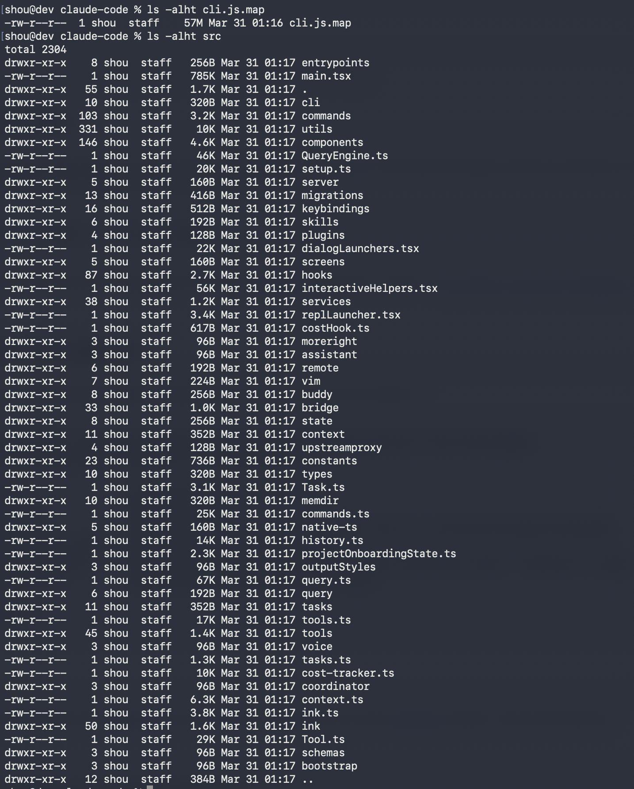

The AI industry reached a critical turning point on March 31, 2026, when a series of operational configuration errors at Anthropic resulted in the massive exposure of the source code for its flagship development tool, Claude Code. This incident, occurring just before an IPO valued at $380 billion, not only revealed the technical secrets of one of the most advanced agentic systems on the market but also triggered a global reassessment of software supply chain security and the nature of intellectual property in the era of generative AI.
Through a source map inadvertently published on the public npm registry, the developer community gained access to over 512,000 lines of TypeScript code, broken down into approximately 1,900 files that make up the “harness” or agentic framework that allows Anthropic's language models to operate autonomously in local environments.
The Anatomy of the Incident: Leak Mechanism and Chronology
The origin of the leak was not a sophisticated cyberattack or a malicious third-party intrusion, but a fundamental failure in the software packaging and release processes within Anthropic.
On March 30, 2026, the company published version 2.1.88 of the package @anthropic-ai/claude-code on the npm registry. While the production code was minified for performance, the package inadvertently included a 59.8 MB source map file named cli.js.map. In modern software development, these files are used for debugging, allowing compressed and obfuscated code to be mapped back to the original human-readable source code.
The specific technical failure is attributed to the use of Bun as the JavaScript runtime, a technology Anthropic had deeply integrated into its stack after acquiring it in late 2025. By default, Bun's bundler generates source maps unless explicitly excluded through configuration rules or an .npmignore file. In this case, a single omitted line in the exclusion configuration allowed the cli.js.map file to reference a compressed file hosted in an Anthropic Cloudflare R2 storage bucket. By downloading this file, researchers were able to reconstruct the entire TypeScript tree, complete with comments, original folder structures, and internal logic intact.

Chronology of the Incident (March 31, 2026)
| Time (UTC) | Key Event |
|---|---|
| ~01:00 | Version 2.1.88 released with the .map file included. |
| 08:23 | Chaofan Shou identifies the leak and publishes the download link on X. |
| 10:00 | Anthropic pulls the package from npm and begins issuing DMCA notices. |
| 12:00 | GitHub mirrors surpass 40,000 forks. |
| 16:00 | Sigrid Jin publishes the initial version of “claw-code” in Python. |
| Evening | Anthropic confirms no customer data or model weights were exposed. |
Analysis of the Leaked Architecture: The Heart of Claude Code
The leak allowed the industry to observe for the first time the real complexity of what many initially considered a simple terminal wrapper for an API. Claude Code revealed itself as a production-grade multi-agent orchestration system, designed to manage determinism and reliability in complex software engineering tasks. The codebase is organized into distinct layers that handle everything from rendering the terminal UI to coordinating multiple AI instances working in parallel.
System Layers and Engineering Design
The architecture of Claude Code is divided into four critical layers identified by the engineers who audited the leaked code. First, the UI layer uses a custom rendering system based on React and Ink, which employs advanced game engine techniques such as an ASCII character pool backed by Int32Array and bit-encoded style metadata. This optimization allows for a 50x reduction in stringWidth function calls during token streaming, essential for maintaining terminal fluidity while the AI generates code in real-time.
Second, the command layer uses Commander.js to manage a wide range of subcommands and local tools. Third, the tools layer implements a modular plugin architecture where each capability—such as file reading, bash execution, or git integration—is isolated and protected by permissions. Finally, the orchestration and agents layer is the most sophisticated, managing task queues and sub-agent generation for parallel execution.
Memory Management and Agent Orchestration
One of the most profound findings in the internal logic is the three-layer memory system. This system uses a central file called MEMORY.md that stores short references instead of full information, forcing the agent to verify every fact against the actual codebase before acting. This design of “systematic distrust” is what allows Claude Code to avoid destructive hallucinations in large repositories, as the agent treats its own memory only as a hint and not as absolute truth.
Furthermore, the code revealed the use of internal “swarms,” where a coordinator agent can generate multiple worker agents with specific permissions to perform multi-activity refactorings. This orchestration approach based on Directed Acyclic Graphs (DAG) allows complex tasks to be broken down into sub-problems solved simultaneously, a technique Anthropic has perfected to overcome the context window limitations of individual models.
Hidden Features and the Strategic Roadmap
Beyond the current architecture, the leak exposed 108 modules protected by feature flags that were not active in the public version, providing an unprecedented view of Anthropic's roadmap. Among these functions are advanced automation systems and gamification elements aimed at transforming the relationship between developers and their AI tools.
KAIROS: The Persistent Agent
The functionality codenamed “KAIROS” is described in the code as an always-on background assistant. Unlike the current prompt-based interaction, KAIROS maintains daily logs of changes in the development environment and can perform “dreamtasks” during user idle periods. These memory consolidation processes allow the AI to understand a project's long-term evolution, identifying architectural inconsistencies or optimization suggestions before the developer requests them.
Conclusion: The Future of Agentic AI Post-Leak
The Claude Code leak is not simply a packaging error; it is an event that has democratized knowledge about building high-performance AI agents. Anthropic, despite its containment efforts, has lost the monopoly over the "craftsmanship" of its agentic orchestration. The availability of the source code allows competitors and startups to replicate in weeks what took Anthropic years and billions of dollars to develop.
However, the incident has also humanized one of the world's most valued AI companies. The discovery of code full of TODOs, hacks for circular dependencies, and Snarky virtual pets has resonated with the developer community, who now see Anthropic not as an infallible entity, but as a team of engineers dealing with technical debt and market pressure just like them.